I'm the API between users and business.
Hi, I'm Albin, a product designer with 3+ years of experience. The last product I designed was launched by the Delhi Police Commissioner, is used by officers every day, and made two more police divisions ask for the same system. I handle the whole process, from research to handoff.
Selected work
Seven case studies, each with the process, the decisions and the results.
albin@portfolio:~$
6 experiments found. Things I build on my own time, with Claude Code as my engineering team.
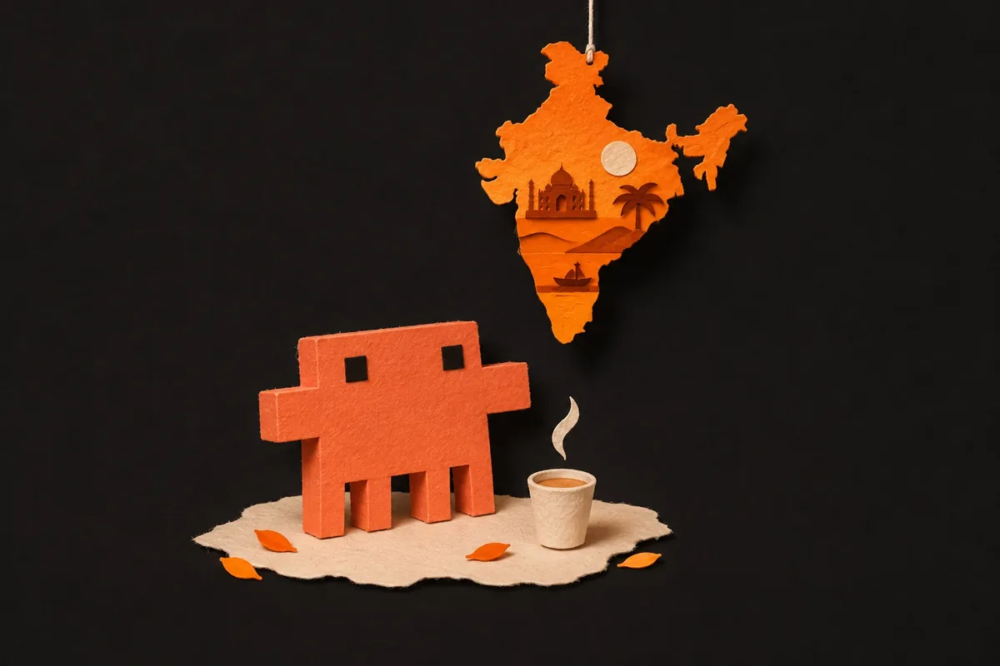
> india-through-claudes-eyes [film] A 30-second papercraft stop-motion of Claude seeing India for the first time. Every frame, and every note of the Desi soundtrack, is made in code. canvas · python audio synth · ffmpeg → watch it here > name-genius An AI naming tool that turns a startup idea into brand names and checks live which domains you can actually register. react · typescript · gemini api · rdap · web audio → find a name in your browser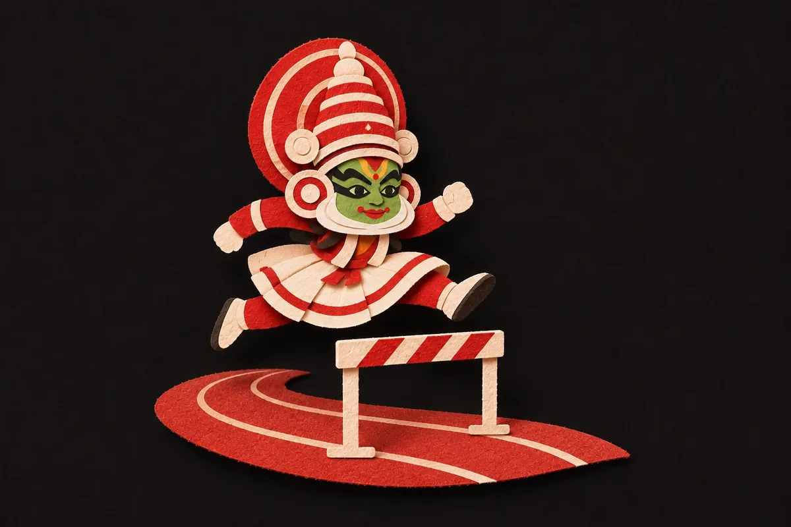
> kathakali-run A Kerala-themed endless runner you play with hand gestures. Show a palm to jump, a fist to duck. mediapipe · canvas → play it in your browser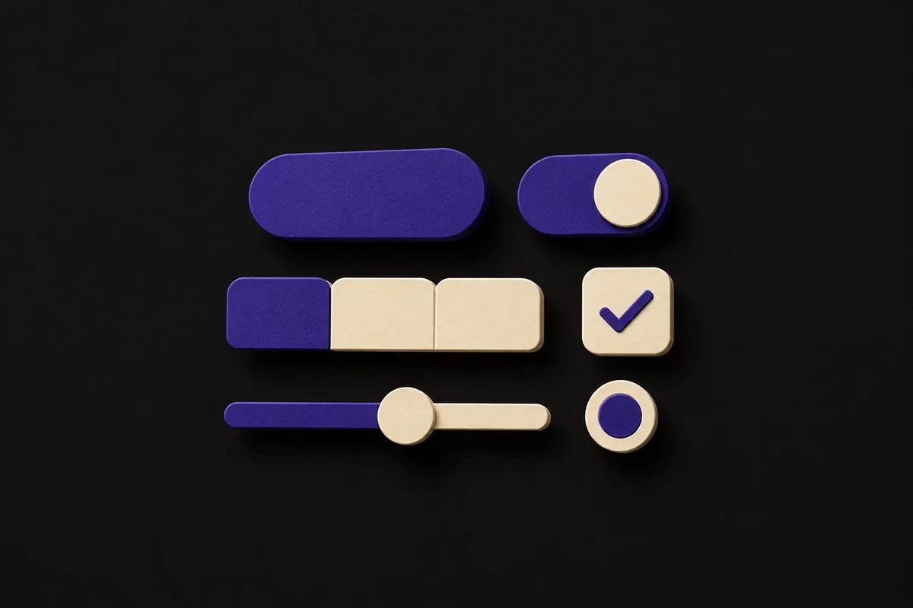
> nucleus-ds My design system running as a real React component library with a documentation site. Not just Figma frames. react · design tokens → browse the live components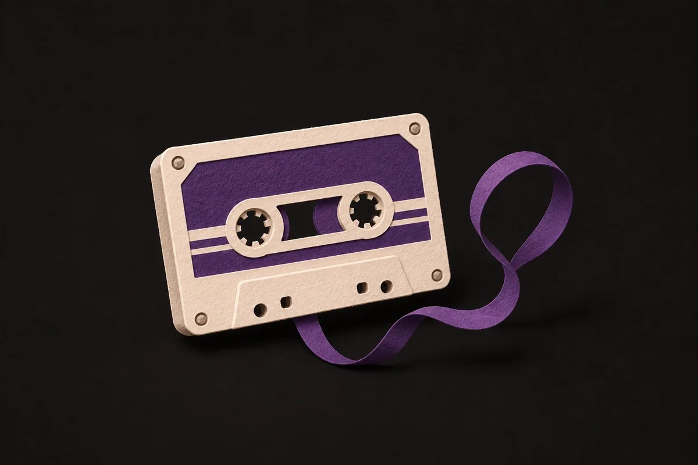
> rewind A nostalgic Hindi music player. Each song gets its own visual world that matches how the music feels. youtube api · netlify → open the player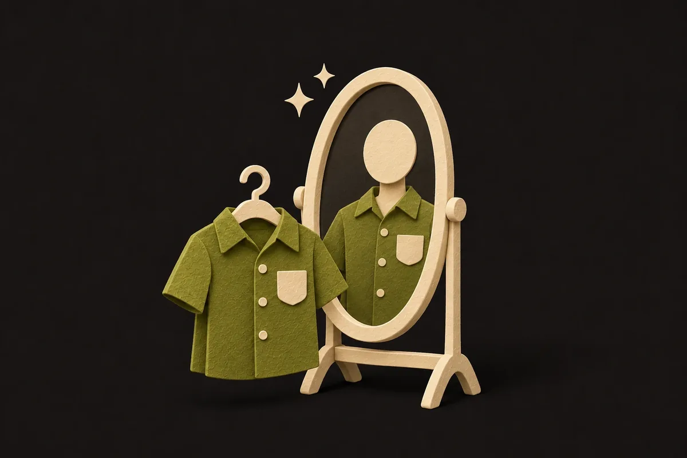
> ai-face-swap [prototype] A Chrome extension that puts your face on ecommerce models, so you can see the outfit on yourself before buying. facefusion · plasmo → watch the demo on LinkedIn// why this matters: I design products, and I can also build them.
Visual explorations
Interfaces I recreate and riff on to keep my visual craft sharp. Practice work, not client work.
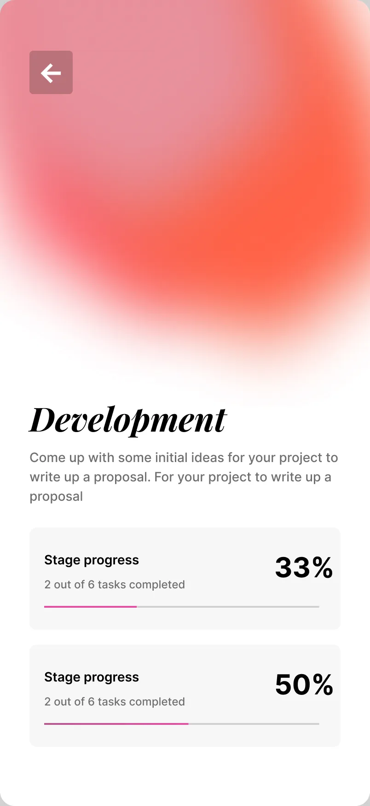
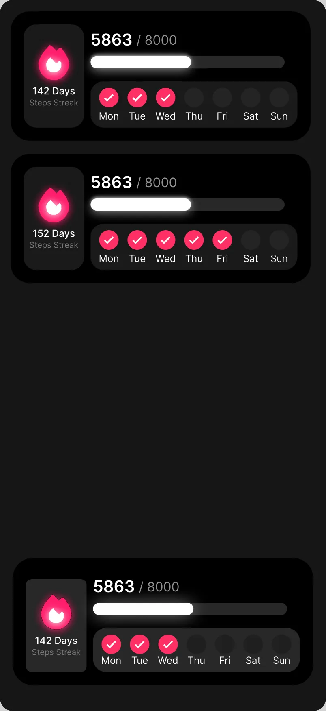
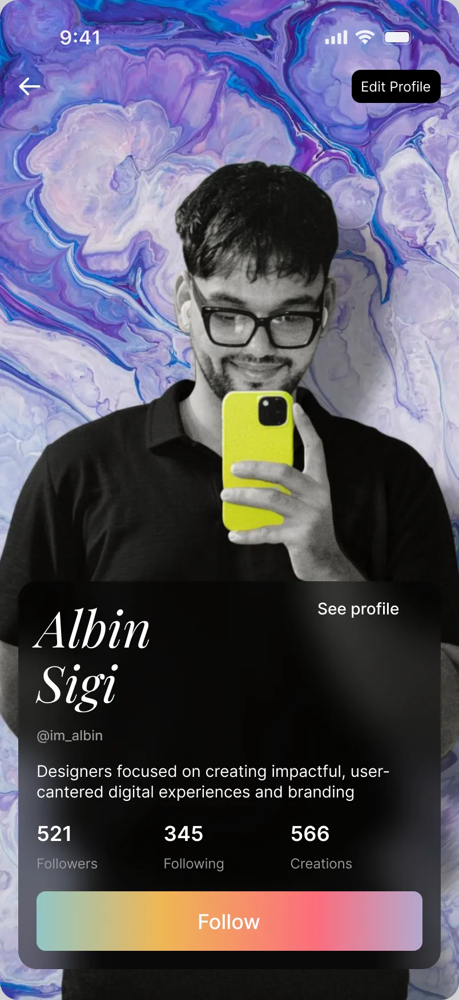
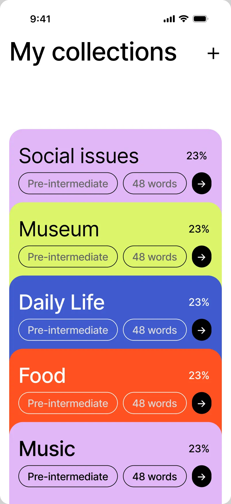
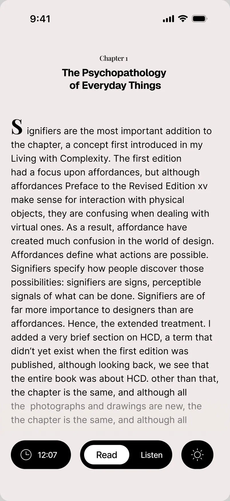
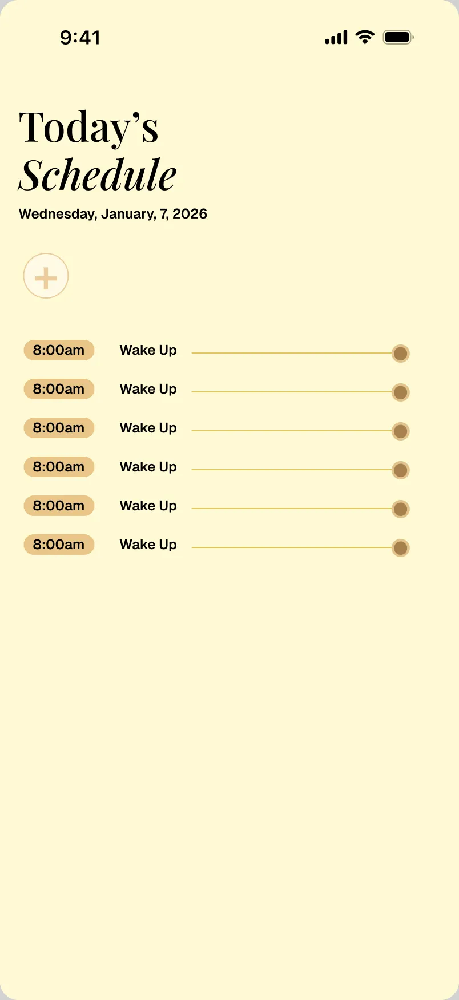
Did you know?
You might have met younger me at the top of the page, the one whose "career plan" was astronaut. Plot twist: I became a product designer, and I design for people right here on the ground.
I grew up in Kerala and studied BCA. I spent over two years at TCS, learning how big teams ship, then became the only designer at an AI startup building tools for Indian law enforcement.
Off the clock, I'm usually holding a guitar, a camera, or planning my next trip. I love shooting vlogs and little videos to keep the memories. Follow me on Instagram to see what I share next.
You'll spot tagging along as you scroll. As kids, we'll happily go anywhere with anyone, so he's coming with you.
You can turn it off from the footer.
Outside work
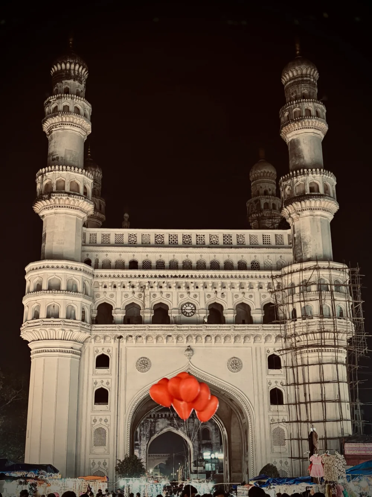
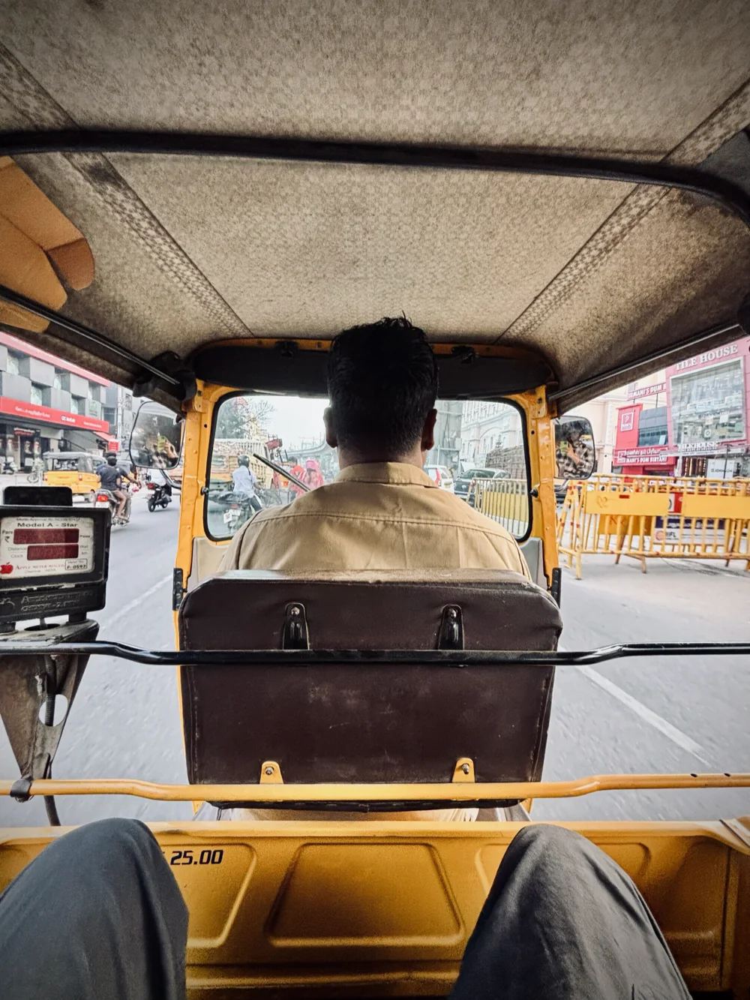
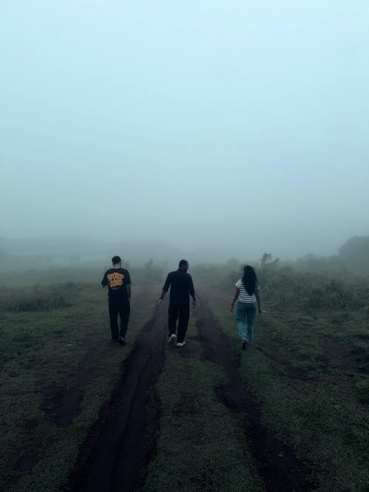
Let's work together.
Hiring, or just want to talk?